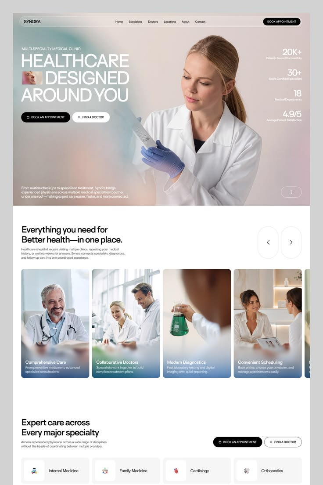

Your AI health assistant
Have a conversation about what you're experiencing, or prepare questions for your appointment.
Health navigation
Describe what you're experiencing in your own words, in Arabic or English.
HealTrip provides health information and care-navigation support. It does not replace professional medical care.
About HealTrip
HealTrip was created to make the journey from noticing a health concern to seeking appropriate care clearer and calmer.
You answer thoughtful follow-up questions, see what may be relevant, and prepare for your visit.
How it works
Describe your symptoms naturally. You can type or use your voice.
Each follow-up question is based on what you've already told us.
See possible explanations that may fit your answers.
Learn which evaluations a healthcare professional may consider, and what to bring.
Explore healthcare professionals and facilities by specialty, location and language.
The assessment
Tell HealTrip what you are experiencing the way you would tell a friend.
What may happen next
Depending on what you describe, a healthcare professional may consider an examination, a test, or imaging.
Written in plain language, so you understand the reason rather than only the name of a test.
The question each evaluation is trying to answer.
Only preparation that is genuinely supported.
Availability and cost vary, so HealTrip never shows a price.
Being asked to complete an evaluation does not by itself mean a particular condition has been confirmed.
Have a conversation about what you're experiencing, or prepare questions for your appointment.
Keep your history, medications, allergies, reports and notes in one place.

Explore healthcare professionals and facilities by specialty, city and language.
Before your visit
A few minutes of preparation changes how much a short appointment can cover.
Your information
What you enter stays in your session or your profile, and you can delete any of it at any time.
Anything you add is recorded as something you reported, until a healthcare professional confirms it.
HealTrip is a navigation and information service.
No. HealTrip helps you understand health information and find your way towards appropriate care.
It does not give a confirmed diagnosis.
It explains evaluations a clinician may consider and why they may be useful.
Yes. Everything works in Arabic and English.
Yes, where your device and browser support it.
Yes. Your profile can hold your history, medications, allergies, reports and previous assessments.
Start by telling us what you're experiencing.